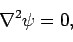
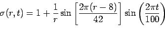
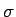
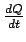
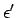
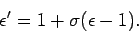

Questions 1 & 2 do not require the use of a computer.



is the density of the insulating material and the equilibrium density is 1. Notice that the total volume does not change. Compute the location of the boundary between insulator A and insulator B as a function of time.

per unit length generated by the changes in density. Note: As the material deforms
is the deformed dielectric constant, then